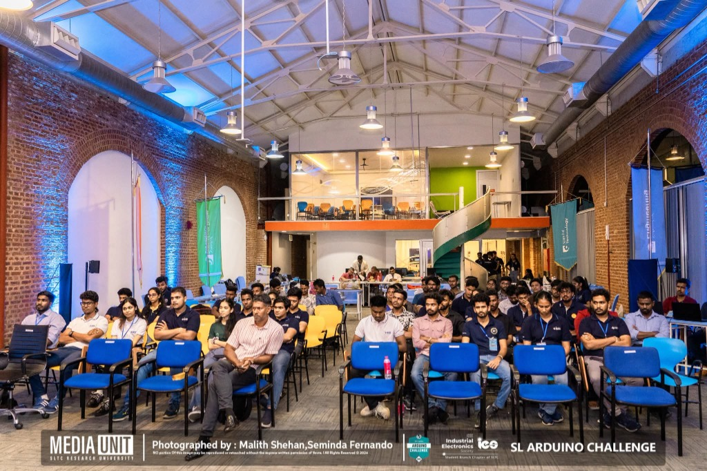

Project Overview
Rice Saver is an automated environmental monitoring and response system designed to protect stored grain in rice warehouses. The system continuously monitors temperature, humidity, and motion to detect spoilage risks and pest intrusion, then autonomously triggers ventilation, heating, or alert systems.
Built under strict IEEE competition constraints — limited component count, fixed code-size budget, and standardized Arduino hardware — the project earned a Top-10 finish at the national IEEE Arduino Challenge.
Technical Details
- Multi-sensor fusion architecture: PIR motion detection for pest intrusion, DHT22 for temperature and humidity, MQ-2 gas sensor for spoilage-gas detection
- Thermal control logic with hysteresis deadband (±2°C) to prevent relay chatter and reduce actuator wear on ventilation fans
- I2C real-time diagnostic interface using 16×2 LCD for field debugging and operator monitoring without a PC connection
- Event-driven state machine architecture for deterministic response to environmental thresholds
- EEPROM data logging for post-event analysis — storing 72 hours of timestamped sensor snapshots
- Power-efficient design with sleep modes achieving 18-hour battery backup on a 2000mAh pack
Challenges & Solutions
The biggest constraint was the IEEE competition's strict code-size limit. Every byte mattered. This forced an aggressive optimization pass — replacing floating-point math with fixed-point integer arithmetic, inlining critical timing functions, and using bitwise operations for state management instead of boolean arrays.
The DHT22 sensor proved unreliable in high-humidity environments (above 90% RH). A software median filter with 5-sample windowing was implemented to reject transient spikes, bringing measurement reliability from ~85% to 99%+ accuracy.
Gallery
